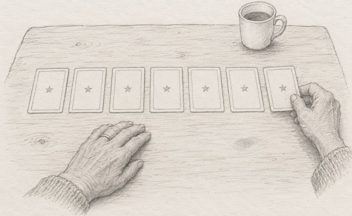

|
Is it real, or are you just waiting?
Most love questions come down to that one. “Does he love me?” “Is he the one?” “Why won’t he commit?” Underneath, it’s the same question.
I can’t answer it for you in a letter. But I can show you what I look for. These are yours to keep.
Signs it’s real:
• He reaches for you. He doesn’t just look.
• When he says “soon,” it happens.
• Your evenings are still your own.
• You think of him, and your body goes calm.
Signs you’re waiting:
• He looks. He doesn’t reach.
• “Soon” has meant “soon” for a long time.
• Your evenings are built around your phone.
• You think of him, and your chest goes tight.
Got something on both lists? Most of us do.
A list can’t tell you which side wins. That part isn’t in this letter.

So what really happens when you bring me a love question? Here’s what we look at.
1. How you asked. Not just what you asked. The words you choose, and the ones you leave out, tell me something too.
2. His name. Say it out loud. (Go on, nobody’s listening.) Does it stop hard, or trail off soft? I read those two very differently, especially when it comes to endings.
3. What he wants, and what’s sitting on top of it. Not whether he read your text. Not where he was on Saturday. I don’t read phones. I read people.
4. The block. The one pattern you can’t see, because you’re standing right inside it. Fair warning: when I name it, it may sting a little.
5. One card, if you want to go deeper. At the end, I lay seven cards face down, and you choose one. Only one. There’s a reason I won’t let you pull a second.
There are two ways in.
Door one: one question. The one that keeps you up at night. A single line is plenty.
Door two: the whole story. His name, what happened, how long “soon” has been going on. Or that there’s no one yet, and you’re tired of waiting. We’ll take our time.
Both doors open the same chat with me. The only difference is how much you bring.
Evelyn, I want to know if it’s real, or if I’m just waiting →
New to me? The first 3 minutes are my gift.
One more thing about “soon.” It never gets shorter on its own.
Ask Evelyn: real, or waiting? →
— Evelyn
P.S. Read the second list again, slowly. If one line made you wince, that’s the one to bring me. Start here.
|